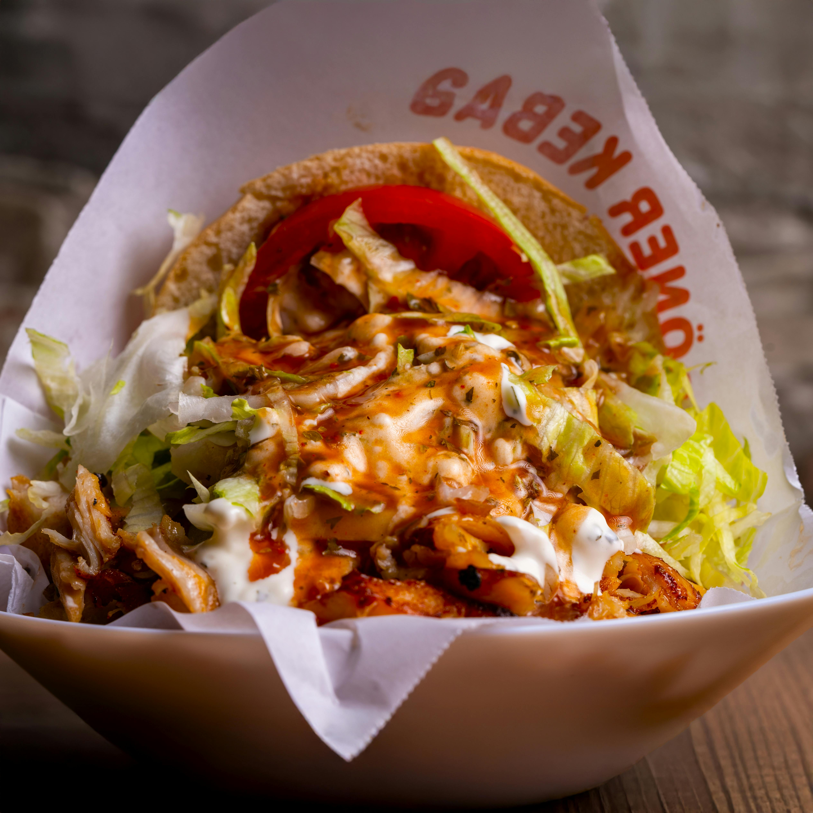

Kebab clásico
Pan de pita, carne mixta, lechuga, tomate y salsa de yogur.
Pan de pita, carne mixta, lechuga, tomate y salsa de yogur.

Combinación de pollo y ternera envuelta en una fina tortilla de trigo.

Delicioso kebab con verduras frescas y salsa de yogur, ideal para vegetarianos.

Patatas con carne de kebab, verduras y nuestra salsa de yogur.
Plato de arroz con carne de kebab y verduras, con salsa de yogur.

Pizza turca con carne de kebab, queso, tomate y especias tradicionales.

Pizza turca con verduras frescas, falafel con tomate rallado, queso y salsa de yogur.